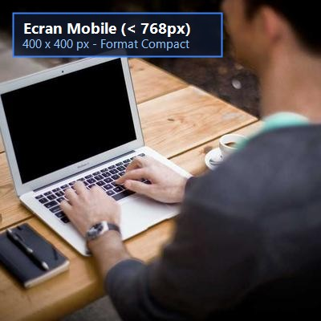
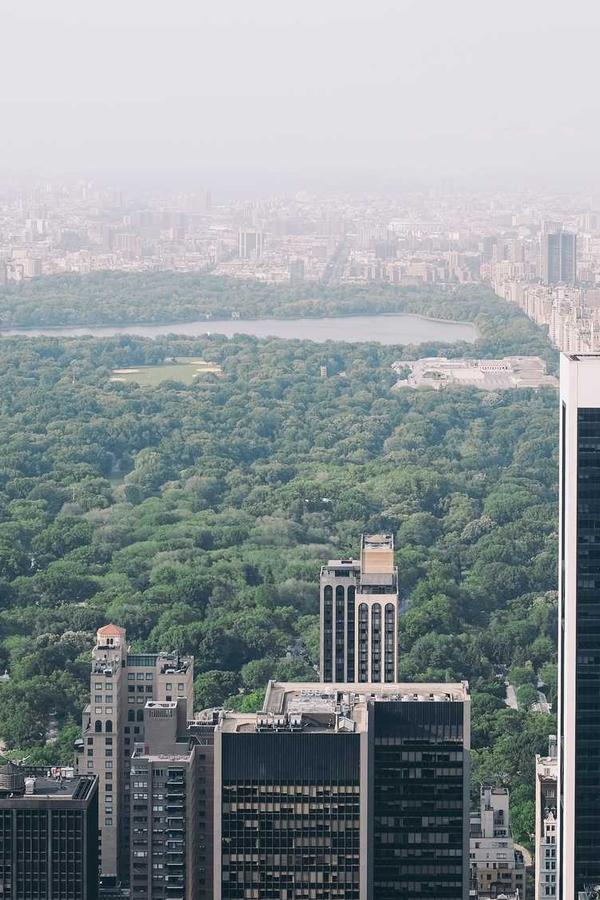

1. Direction artistique selon la largeur d'écran (Paysage de montagne)
Redimensionnez votre fenêtre pour observer le basculement automatique entre les versions Desktop (≥ 1024px), Tablette (≥ 768px) et Mobile (< 768px).

2. Adaptation d'un poste de travail informatique (Thème STI)
Le cadrage et la définition s'ajustent pour garantir une lisibilité optimale sur chaque support sans gaspiller la bande passante.

3. Détection de l'orientation : media="(orientation: landscape)"
Le navigateur charge une image panoramique en mode paysage et une image verticale en mode portrait.
